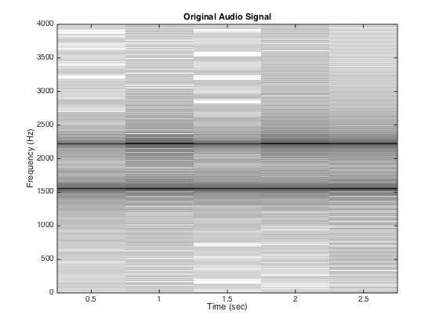

Lab 8 HW
Contents
4a
% Load in the data load speechbad.mat % Spectrogram in dB plotspecDB(xxbad, 8000, 8000, 80); title('Original Audio Signal'); ylabel('Frequency (Hz)'); xlabel('Time (sec)');
4b
FIR filters to remove sinusoids
w1 = 2*pi*f_interference(1)/fs;
w2 = 2*pi*f_interference(2)/fs;
bk1 = [1, -2*cos(w1),1];
bk2 = [1, -2*cos(w2),1];
bkf = firfilt(bk1, bk2);
fprintf('Filter coefficients: b = {%f, %f, %f, %f, %f}\n', bkf(1),bkf(2),bkf(3),bkf(4),bkf(5));
Filter coefficients: b = {1.000000, -0.337908, 1.762386, -0.337908, 1.000000}
4c
ww = -pi:(pi/100):pi; H3 = freqz(bkf, 1, ww); figure subplot(2,1,1); plot(ww, abs(H3)), grid on title('Amplitude of Frequency Reponse'); ylabel('Amplitude'); xlabel('Normalized Radian Frequency'); subplot(2,1,2); plot(ww, angle(H3)), grid on title('Phase of Frequency Reponse'); ylabel('Phase'); xlabel('Normalized Radian Frequency'); fprintf('Null response at %f, %f, %f, %f\n', -w1, -w2, w2, w1);
Null response at -1.745155, -1.221294, 1.221294, 1.745155
4d
xxgood = firfilt(bkf, xxbad); figure subplot(2,1,1); plotspecDB(xxbad, 8000, 8000, 80); title('Original Audio Signal'); ylabel('Frequency (Hz)'); xlabel('Time (sec)'); subplot(2,1,2); plotspecDB(xxgood, 8000, 8000, 80); title('Filtered Audio Signal'); ylabel('Frequency (Hz)'); xlabel('Time (sec)'); soundsc(xxgood);